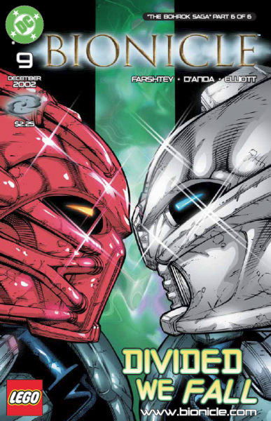
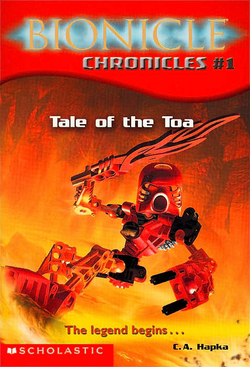
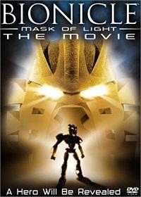

How to get into the story?
As the lore of BIONICLE is so vast and unnecessarily complicated, it is easy for new fans to become overwhelmed. It doesn't help that the story has been explained through various forms of media from books to video games.
Because of this "Media Maze" the timeline has become less and less straightforward and newcomers won't necessarily know where to start digging in.
Where to start?

If you're curious, the easiest way to start is by reading the comics online. Various websites such as BioMedia Project have preserved the comics in their original form as well as the online games and web serials.
But even though the comics explain much of the main storyline, the novels are far more accurate and a better way to get into the franchise.
Canon? Non-canon?
Canon is the term when talking about whether something is from the official storyline in the franchise. There is a running gag that nothing in BIONICLE is canon. However, it is good to keep in mind that everything has some degree of canonicity.
Very canon:

Somewhat canon:

Very non-canon: